GD06が大会で使えるようになった最初の週末、11/7〜11/8の2日間に開催された37大会の入賞344デッキを集計し、前週（10/26〜11/1・23大会・224デッキ）と比べました。対象はシリアルカードチャレンジ 10月・NTC MISSION5 11月です。入賞デッキは大会結果に順位が載ったデッキすべてで、上位4位だけを使う相性表とは母数が違います。
デッキの型ごとの入賞割合
| 型 | 前週 | 今回 | 差 |
|---|---|---|---|
| ↓ 赤白 MF | 26.8% (60) | 17.7% (61) | −9.1pt |
| ↑ 青緑 νガンダム | 11.2% (25) | 16.3% (56) | +5.1pt |
| ↓ 緑紫 サザビー | 17.0% (38) | 10.5% (36) | −6.5pt |
| ↑ 赤青 オーブ | 0.0% (0) | 9.9% (34) | +9.9pt |
| ↑ 赤白 エアリアル | 0.0% (0) | 7.3% (25) | +7.3pt |
| ↑ 赤白 ZZ・アルトロン | 0.0% (0) | 7.0% (24) | +7.0pt |
| ↘ 青白 ストライク | 8.0% (18) | 5.8% (20) | −2.2pt |
| ↗ 青白 オーブ | 0.4% (1) | 3.8% (13) | +3.3pt |
| ↓ 青紫 鉄華団 | 7.1% (16) | 1.5% (5) | −5.7pt |
| ↓ その他 | 29.5% (66) | 20.3% (70) | −9.1pt |
矢印は前週からの割合の差で、↑ +4pt以上、↗ +1.5pt以上+4pt未満、→ −1.5pt超+1.5pt未満、↘ −4pt超−1.5pt以下、↓ −4pt以下です。
GD06のカードの採用率
11/7〜11/8の入賞344デッキ全体で採用率の上位8枚です。採用率は、入賞デッキのうちそのカードを1枚以上入れた割合です。
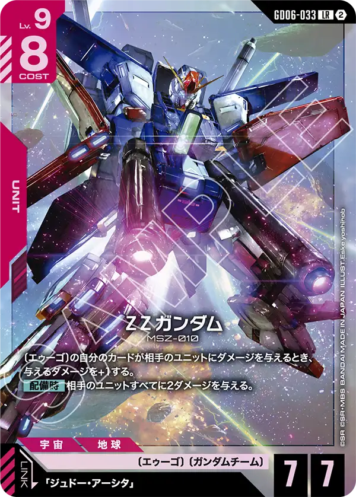


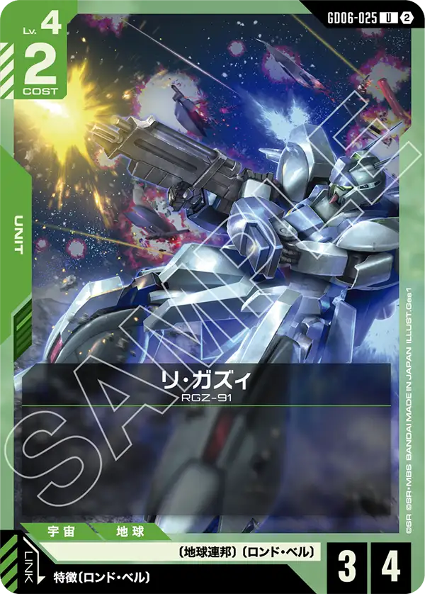
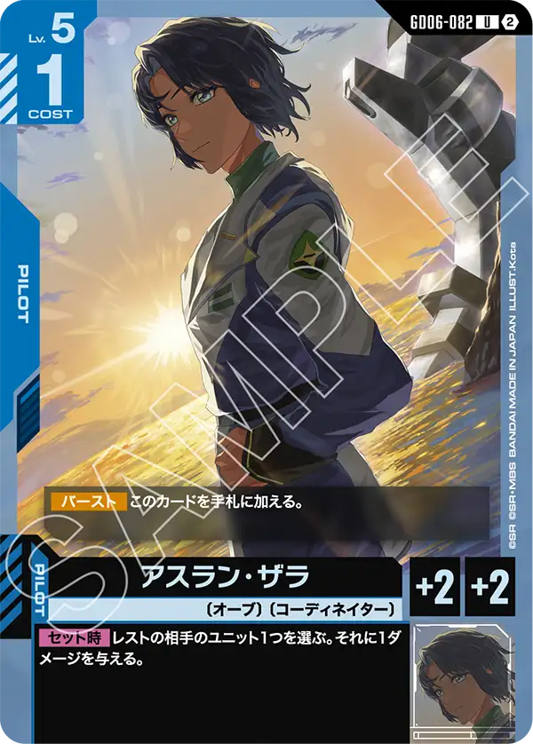
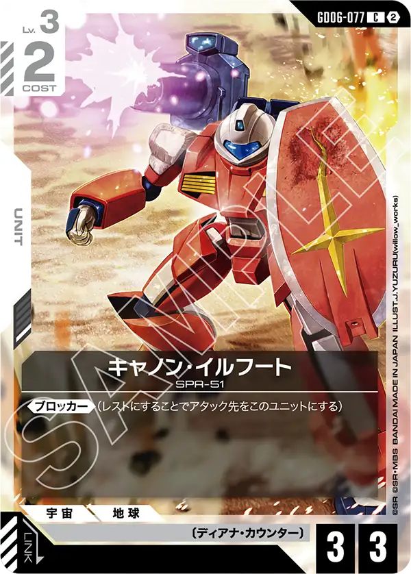
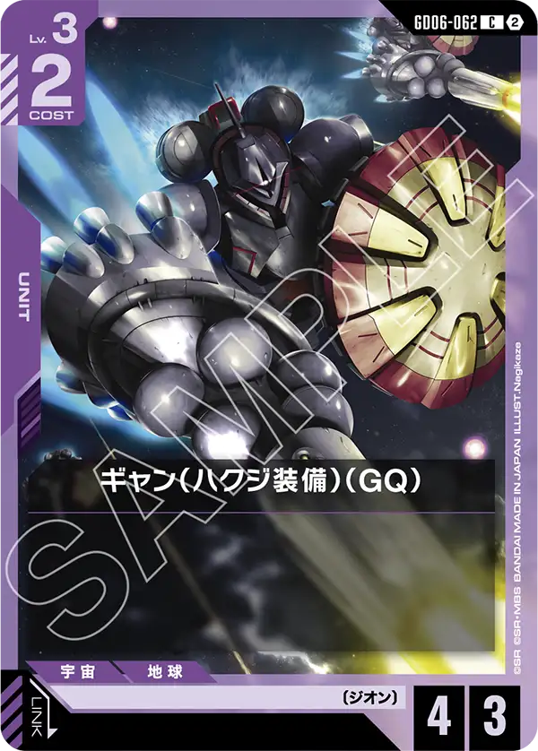
型ごとの採用カード
型ごとに、採用率10%以上のGD06のカードを上位3枚まで、続けてGD06以外のカードの採用率上位2枚を並べています（採用率が同じときはコストの高いカードを先にしています）。採用率は、その型の入賞デッキのうちそのカードを1枚以上入れた割合です。「その他」は載せていません。
赤白 MF ↓（61デッキ）
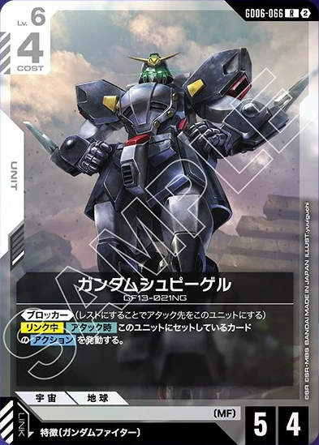


入賞トップは前週と変更なし。新しい取り組みとしてΖΖガンダム[GD06-033]を採用した型が登場する形となった。
デッキコンセプト的にバーンが後半多いため、相性が良いと判断されたのかと思われる。
ただし、ΖΖガンダム[GD06-033]自体がレベル9とほぼMFでは終盤も終盤に登場する形になるため、そもそもこのカードを使わなくても勝てると言う形になっていくのでは無いかと思われる。
アルトロンガンダム（EW版）[GD06-064]も同じように採用されている。
序盤から使えるブロッカー+中盤からはアタッカーとしても利用ができる万能カードではあるが、そのタイミングでは別のカードを使いたいと思うプレイヤーも多かったのか3割に満たない採用率となった。
他デッキでは非常に強力なパーツとして利用されているのでそれを見てMFに必要なのかは要検討と言う形になるのだろう。
青緑 νガンダム ↑（56デッキ）


5弾で登場したロンド・ベルは6弾ではリ・ガズィ[GD06-025]の1枚だけの強化となった。
リンクができるバニラカードではあるが、種類数が足りなかったロンド・ベルではこのカードの採用は必要とされたのだろう。
入賞2位ということで5弾のとき同様に後半につれて入賞が伸び悩まないように頑張ってもらいたい。
緑紫 サザビー ↓（36デッキ）
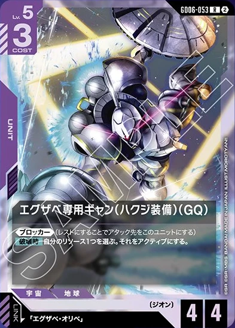
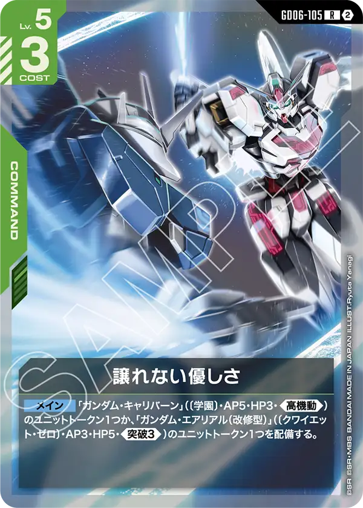


緑紫はいわゆるリゼル[GD01-018]スタッツと言われるギャン（ハクジ装備）（GQ）[GD06-062]、破壊時にリソースをアクティブにできるブロッカーのエグザベ専用ギャン（ハクジ装備）（GQ）[GD06-053]が主に採用された。
ジオン自体は様々な強化が入っているが、使うためにはデッキの中身の修正が大きいと判断されたのか一旦、既存のデッキに採用しやすいところが入ったと思われる。
これからの研究が必要になるだろうこのデッキは入賞率が落ちてしまうこととなったが、今後の研究によっては大きく入賞率を伸ばす可能性も秘めているので注目していきたい。
赤青 オーブ ↑（34デッキ）
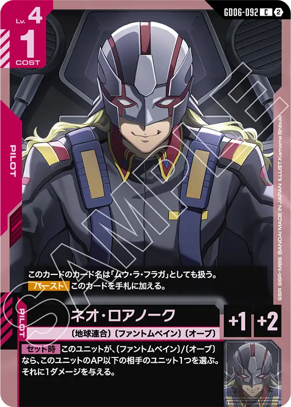
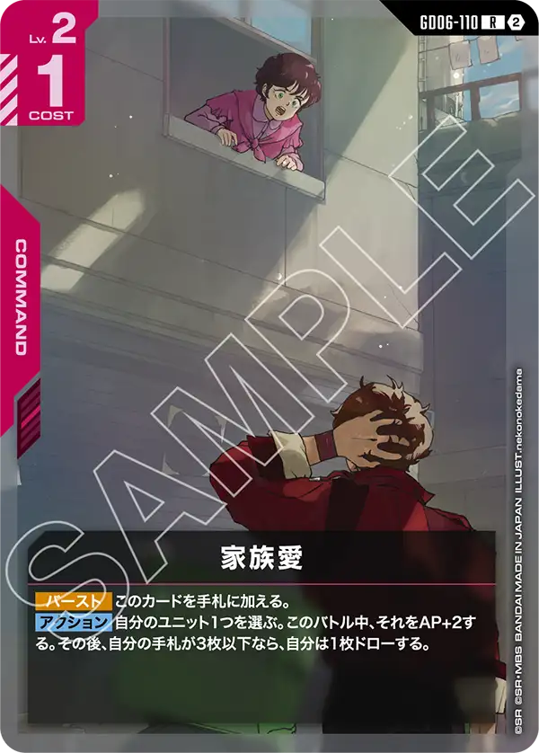


赤青オーブは6弾スタート時にもっとも注目されたデッキとされる。
5弾から登場した〔オーブ〕に多数の強化が入ったため、〔オーブ〕中心にデッキ作成が行われた。
〔オーブ〕のパイロットはセット時やリンク時効果が非常に強力な効果を持っているのでそれをムリ無く組み込んでいる。
APを上げ、条件を達成すれば1枚ドローする家族愛[GD06-110]は汎用性が高いカードとして赤色のデッキにはよく採用されるようになると思われる。
まだ登場し始めたデッキなので今後の研究によって洗練された形になっていくと思われる。
赤白 エアリアル ↑（25デッキ）


赤白は色だけ見ると入賞数が異常に多い状態にあるが、実は複数のタイプに分かれている。
次項で説明するZZ・アルトロンのデッキと似たような形ではあるが、ガンダム・エアリアル[ST13-006]とジャスティスガンダム[GD01-066]を利用して戦う形となっている。
ST13が登場したときに少し話題になっていたデッキだが、6弾の登場で順当に強化が入り入賞したのだろう。
このデッキは中身を少し変更するだけで動き始めるタイミングも変わるため、相手の思考を混乱させる事ができるだろう。
赤白 ZZ・アルトロン ↑（24デッキ）


前述したエアリアルデッキとは若干異なる形で、ΖΖガンダム[GD06-033]を中心に据えつつアルトロンガンダム（EW版）[GD06-064]を使って序盤を過ごし、中盤から一転攻勢に向かうデッキとなっている。
まだ、型が定まり切っていないのかエアリアルのデッキと似た状態にあるので今後の研究では1つにまとまっていく形になるのでは無いかと思われる。
青白 ストライク ↘（20デッキ）


5弾、5.5弾環境では一時非常に猛威を奮っていたこのデッキにももちろん強化が入っている。
序盤のブロッカーキャノン・イルフート[GD06-077]や他のデッキにも採用されているアルトロンガンダム（EW版）[GD06-064]、HP6ベースとなるソレイユ[GD06-130]が主な新規採用となっている。
今までベースはアーガマ[GD02-129]の採用で突破を無効にしていく形をとっていたが、HP6ベースがあるなら切り替えない選択肢はなかったと言えよう。
白や青には採用が検討されるようなカードがまだあるので今後も期待してみていきたい。
青白 オーブ ↗（13デッキ）


前述した青白ストライクと似た形ではあるが、こちらはより多く〔オーブ〕を入れた形になる。
非常に注目度の高いインフィニットジャスティスガンダム[GD06-002]とアスラン・ザラ[GD06-082]を使い、戦っていく形になる。
インフィニットジャスティスガンダム[GD06-002]はバトルに勝利することで〔オーブ〕を3回復できるため、低APへアタックして自身を回復せず別の〔オーブ〕を回復させることも可能なのでHPがギリギリのユニットに使うなどして盤面のユニット数を削られずに戦う事ができる。
また、配備時の効果は手札消費無しに相手ユニットを手札に戻せるのでとても強い効果となっており、条件がアクティブと言う緩い条件なのも魅力的である。
アスラン・ザラ[GD06-082]はセット時にレストになっているユニット相手にダメージを与えると言うことでM1アストレイ（シュライク装備）[GD05-015]やガンタンク[GD01-008]を彷彿とさせるカードとなっている。
しかも補正値がAPHP両方2と言うことでステータスも申し分無し、リンク条件に〔オーブ〕を持つユニットも多数いるため強力と言って差し支えないだろう。
新しいカードが複数採用されているため、まだ研究が必要なデッキといえるのでこちらも注目していきたい。
青紫 鉄華団 ↓（5デッキ）
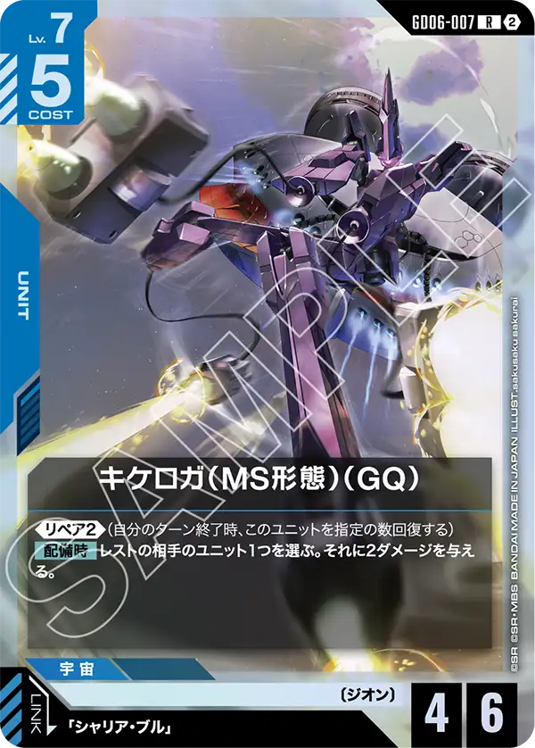

様々な型があるこのデッキにも強化が入った。
ただし、基本的な形はガンダム・バルバトスルプス[GD03-050]やストライクフリーダムガンダム[GD05-002]を中心とした立ち回りをするデッキは変わりない。
新弾のカードも1/5しか採用されていないところを見ると様々な調整が行われているのだと感じる。
大きくデッキの内容を変更することでまだ復権の要素は秘めているが、まだまだ明確な答えは出ていないのだろう。
運営のひとこと
GD06は全体的にパワー不足と言われるカードが多めの中でその中でも事前評価が高かったカードが多く採用され、結果を残している。
まだ隠れた評価カードがあるかもしれないがそれはまた結果を見て確認していきたい。
ブロッカーに関連するカードが多く利用されているため今後、高機動を有するデッキがそれを使うのかも興味深いところ。
もっと詳しく見る
大会ごとの結果やデッキカラーの割合は、シリアルカードチャレンジ 10月・NTC MISSION5 11月の環境分析で確かめられます。
数え方
型は、デッキカラーと入れているカードで次のように分けました。同じデッキカラーで2つに当てはまるときは上の型にしています。どれにも当てはまらないデッキは「その他」にまとめました。
- 赤白 MF：マスター・アジア か ドモン・カッシュ入り
- 赤白 ZZ・アルトロン：ΖΖガンダム（GD06-033）とキャノン・イルフート入り
- 赤白 エアリアル：ガンダム・エアリアル・ΖΖガンダム（GD06-033）に、アスラン・ザラ か ジャスティスガンダム入り
- 青緑 νガンダム：νガンダム か リ・ガズィ入り
- 緑紫 サザビー：サザビーに、キュベレイ か ハマーン・カーン入り
- 赤青 オーブ：ドムトルーパー・ネオ・ロアノーク・アンドリュー・バルトフェルドのどれか入り
- 青白 オーブ：アンドリュー・バルトフェルド入り か アカツキ（オオワシ）とM1アストレイ（シュライク装備）入り
- 青白 ストライク：ストライクフリーダムガンダムに、エールストライクガンダム か キラ・ヤマト入り
- 青紫 鉄華団：ガンダム・バルバトスルプス（GD03-050）入り
今回はGD06が大会で使えるようになった11/7〜11/8の2日間だけを数え、前週は月曜から日曜の7日間で数えました。デッキリストが公開されていない入賞デッキは数に入れていません（今回0件・前週0件）。
※数字は当サイトが公式の大会結果から自動で集めたデータの集計です。誤りに気づいたらXアカウント（@gcg_stats）のDMへお知らせください。